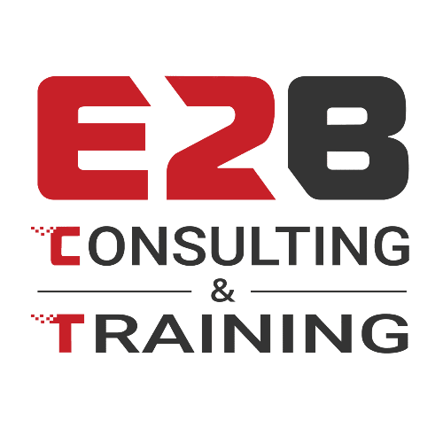

SEO
Audit technique, mots-clés, contenus optimisés, maillage interne et suivi avec Search Console.
En parler ↗Projets réalisés pour

À propos
Je suis Ayoub Yatouji, consultant SEO et professionnel du marketing digital, titulaire d’un Master professionnel en Distribution, Négociation et Commerce Digital.
Au sein d’E2B Consulting & Training, j’ai développé une approche du référencement qui combine analyse technique, compréhension des intentions de recherche, stratégie éditoriale et suivi des performances.
Je m’intéresse également aux usages de l’intelligence artificielle et au GEO (Generative Engine Optimization), afin d’anticiper l’évolution de la recherche en ligne.
Offres
Attirer des visiteurs, les convertir et gagner du temps : trois leviers que je sais relier entre eux.
Audit technique, mots-clés, contenus optimisés, maillage interne et suivi avec Search Console.
En parler ↗Campagnes Facebook et Instagram : ciblage, créatifs, tests et optimisation du coût par résultat.
En parler ↗Campagnes de recherche Google et campagnes B2B LinkedIn : mots-clés, ciblage par fonction et secteur, suivi des conversions.
En parler ↗Workflows n8n, outils Python et agents IA : rapports SEO et publicitaires, alertes, production de contenu.
En parler ↗Parcours
École Supérieure de Commerce de Tunis (ESCT)
ESCT – Université de La Manouba
E2B Consulting & Training : SEO, contenu et projet de fin d’études
First Master Class
Sur le terrain
J’ai représenté E2B, devenue i2business.ai, face aux visiteurs, étudiants et professionnels.
Stand E2B lors d’un événement organisé par l’Université Arabe des Sciences.
Représentation d’E2B au Job Fair de l’école : échanges avec les étudiants et les recruteurs.
Hôtel Royal Hammamet. Représentation d’i2business.ai, aux côtés de M. Mohamed Kais Khenine, autour des RH, de l’innovation et de la transformation digitale.
Accueil des visiteurs, présentation des solutions de conseil, formation et automatisation, puis échanges autour des besoins professionnels.

Représentation d’E2B au Job Fair : présentation de la culture d’entreprise et réponse aux questions sur les carrières en marketing et digital.

Représentation d’i2business.ai aux côtés de M. Mohamed Kais Khenine, autour de l’IA, des ressources humaines et de la transformation digitale.

Compétences
De l’audit à l’optimisation, chaque action répond à un objectif clair : améliorer la visibilité et l’expérience de recherche.
Audits, exploration, indexation, performance, Core Web Vitals et résolution des problèmes techniques.
Recherche de mots-clés, intentions de recherche, optimisation des pages et maillage interne.
Suivi des performances organiques, analyse des opportunités et recommandations basées sur les données.
Utilisation d’outils IA dans les processus SEO et réflexion sur la visibilité dans les moteurs génératifs.
Google Search Console · Google Analytics 4 · Screaming Frog · Ahrefs · Meta Ads · Meta Business Suite · Google Ads · LinkedIn Ads · SEMrush · SurferSEO · Frase · Claude · Perplexity · WordPress
Méthode
Audit technique et éditorial pour repérer ce qui freine la visibilité : exploration, indexation, contenus, concurrence.
Recherche de mots-clés, intentions de recherche et structure en clusters et pages piliers.
Contenus optimisés, pages de service, et campagnes Meta, Google et LinkedIn Ads lancées et améliorées en continu.
Workflows n8n et outils Python reliés à Search Console pour supprimer les tâches répétitives.
Suivi des clics, conversions et coûts par résultat, puis rapports clairs pour décider de la suite.
Formules
Trois formules adaptées à votre projet. Chaque tarif est établi sur devis.
État des lieux SEO et publicité : ce qui fonctionne, ce qui bloque et les priorités.
Demander un devis ↗Suivi et optimisation continue du SEO et des campagnes, avec un rapport mensuel.
Demander un devis ↗Mise en place de campagnes Meta, Google ou LinkedIn : ciblage, annonces et suivi des conversions.
Demander un devis ↗Projets
Des projets SEO et d’automatisation réalisés chez E2B Consulting & Training et pour des sites clients.
Structuration et migration du contenu du nouveau site : programmes de licence et master, parcours professionnels, fiches de formation et informations institutionnelles.
Stratégie SEO complète et système d’automatisation conçu pour kenzastihl.com : audit technique, suivi des positions, backlinks, contenu, santé du site et reporting automatisé.
Stage SEO au sein de l’entreprise devenue i2business.ai : mise à jour éditoriale du site, création de nouvelles pages, optimisation on-page, recherche de mots-clés et amélioration de la structure de contenu.
Création d’une stratégie de contenu B2B pour le marché nord-américain : 35 pages organisées en 6 clusters sémantiques, avec une approche éditoriale orientée E-E-A-T.
Étude de cas
Entre octobre et décembre 2025, les clics sont passés de 6 340 à 4 870 et la position moyenne de 8,4 à 10,4, en partie à cause de la saisonnalité. Audits, contenus et rapports se faisaient à la main.
Surveillance technique quotidienne, suivi des positions, contenus optimisés avec des skills IA et rapport mensuel automatique : 16 workflows n8n et un outil Python relié à Search Console.
De février à mars 2026 : +30,6 % de clics, +27,7 % d’impressions et une position moyenne de 9,9 à 8,7. Rédaction d’une fiche produit : −85 % de temps. Rapport mensuel : −95 %.
Projet de fin d’études
Master DNCD, ESCT – Université de La Manouba, 2025/2026. Conception et déploiement d’un agent IA appliqué à kenzastihl.com, réalisé chez E2B Consulting & Training.
Surveillance technique, suivi des positions via SerpAPI, génération de contenu avec l’API Claude et reporting automatique.
Skills spécialisés pour les tâches SEO récurrentes : contenu, audits et analyses.
kenza-seo-tool génère les rapports mensuels à partir de l’API Google Search Console.
Résultats mesurés, février → mars 2026
Automatisation
Estimez le temps passé chaque mois sur vos rapports (SEO, Meta, Google ou LinkedIn Ads).
Estimation basée sur la baisse de 95 % observée sur un rapport SEO mensuel (3-4 h à moins de 2 min). Le gain réel dépend de vos rapports.
Preuves
Données issues de Search Console, comparées entre deux périodes.
Février 2026 → mars 2026
Septembre 2025 → octobre 2025
Blog
Un espace pour partager des analyses, méthodes et retours d’expérience sur le référencement et le marketing digital.
Comprendre l’état technique et éditorial d’un site avant de définir les priorités d’optimisation.
Lire l’article ↗Structurer les contenus autour des besoins des utilisateurs et faciliter la navigation entre les pages.
Lire l’article ↗Explorer les liens entre référencement classique, qualité des contenus et moteurs de recherche génératifs.
Lire l’article ↗Ressource gratuite
Un PDF d’une page à cocher avant de lancer ou de relancer vos campagnes : SEO, Meta Ads, Google Ads, LinkedIn Ads et automatisation.
Test rapide
Trois questions pour une première orientation. Ce n’est pas un plan média complet.
Test rapide
Huit questions, une minute. Répondez honnêtement.
Questions fréquentes
En général de quelques semaines à plusieurs mois, selon le site et la concurrence. Personne ne peut garantir un classement. Sur kenzastihl.com, j’ai mesuré une hausse de clics en un mois, mais chaque site est différent.
Le SEO est plus lent mais durable. La publicité est rapide, mais s’arrête avec le budget. Le plus efficace est souvent de les combiner : la publicité teste vite ce qui marche, le SEO consolide.
Google Ads touche des personnes qui cherchent déjà votre produit. Meta Ads (Facebook et Instagram) convient à la notoriété et aux produits visuels. LinkedIn Ads vise les décideurs en B2B, avec un coût par clic plus élevé.
Cela dépend de l’objectif et du secteur. Je recommande de commencer par un budget de test, de mesurer le coût par résultat, puis d’augmenter ce qui fonctionne.
Les rapports SEO et publicitaires, le suivi des positions, la surveillance technique, les alertes et une partie de la production de contenu. Sur un projet, un rapport mensuel est passé de 3-4 heures à moins de 2 minutes.
Audit, stratégie, mise en œuvre, puis suivi avec des rapports clairs. Écrivez-moi par e-mail ou WhatsApp pour définir vos besoins.
Contact
Ouvert aux opportunités professionnelles, collaborations et projets SEO.